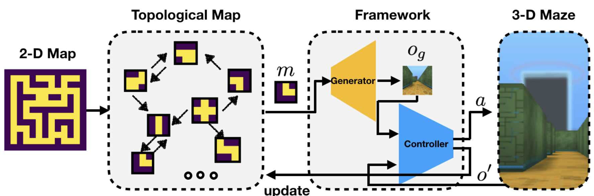
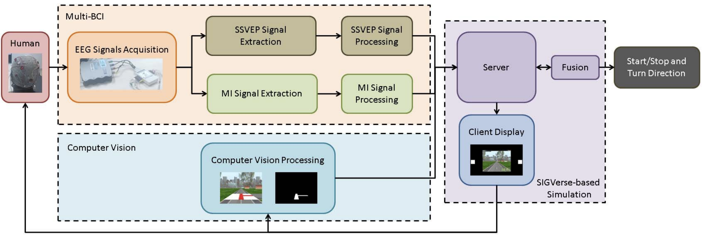
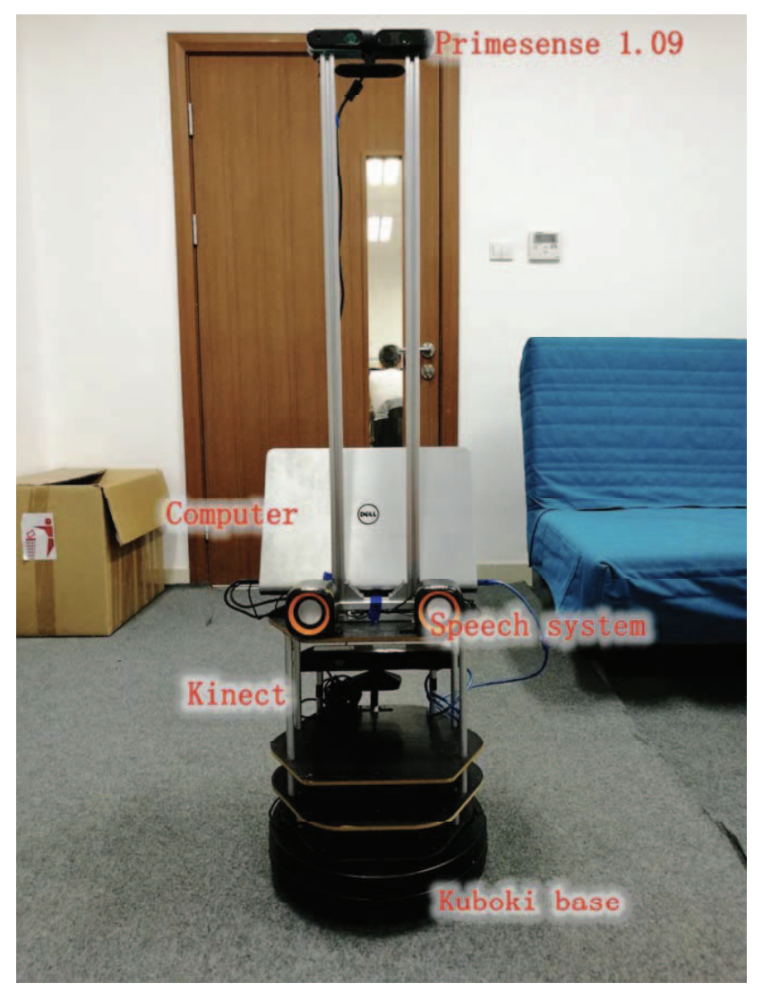

About Me
你好 (Hi),
I am a Ph.D. candidate at Khoury College of Computer Sciences, Northeastern University, advised by
Prof. Christopher Amato
and
Prof. Lawson Wong.
Previously, I received my B.S. and M.S. from Nankai University (China) where I was fortunate to work with
Prof. Feng Duan
on computer vision and autonomous driving.
If you are interested in my research or collaboration, I can be reached via:
- Email: xu [dot] cheng [at] northeastern [dot] edu
Research Interest
Currently, I am working on visual navigation with rough priors (e.g., 2-D rough maps) to facilitate fast generalization to unseen environments, using deep learning and computer vision.
.
Publications

|
Hierarchical Robot Navigation
in Novel Environments using Rough 2-D Maps
Chengguang Xu, Christopher Amato and Lawson L.S. Wong. In the Proceedings of the
Conference on Robot Learning (CoRL-20), November 2020.
[paper, code, and video]
Description: Given the rough 2-D map of an unseen maze, a dynamic topological
map is first initialized from it. During navigation, the dynamic topological map proposes a local map
patch m of the next landmark to reach. Next, the generative model uses m to generate a first-person
observation og corresponding to the landmark. The local controller then uses og as a subgoal and
executes the local navigation. If the move is successful, the local map patch of next landmark is
generated; otherwise, the dynamic map is updated, and another path is planned and executed.
|

|
Deep Supervised Summarization:
Algorithm and Application to Learning Instructions
Chengguang Xu and Ehsan Elhamifar. In the Proceedings of the Thirty-Third Conference on Neural
Information Processing Systems (NeurIPS-19),
December 2019. [Paper]
Description: We addressed the problem of supervised subset selection by generalizing the facility location to learn
from ground-truth summaries. We considered an efficient sparse optimization of the uncapacitated
facility location and investigated conditions under which it recovers ground-truth representatives
and also becomes equivalent to the original NP-hard problem. We designed a loss function and an
efficient framework to learn representations of data so that the input of transformed data to the facility
location satisfies the theoretical conditions, hence, recovers ground-truth summaries. We showed
the effectiveness of our method for recovering key-steps of instructional videos.
|

|
A human-vehicle
collaborative simulated driving system based on hybrid brain–computer interfaces and computer vision
Wenyu Li, Feng Duan, Shili Sheng, Chengguang Xu, Rensong Liu, Zhiwen Zhang, Xue Jiang. In the IEEE Transactions on Cognitive and Developmental Systems, October 2017.
[paper]
Description: Automatic driving vehicles have been developed to provide more convenient and comfortable driving experiences.
However, these vehicles failed in satisfying the variance of human intentions. Recently, the strategy of collaborating brain-computer
interface (BCI) controlling and automatic driving receives attention. Since the BCI system remained some limitation in real-time controlling,
a fusion method has been proposed to explore and verify the feasibility of human-vehicle collaborative driving in this paper. A hybrid BCI was developed to interpret human intentions.
In addition, a computer vision-based automatic driving component was developed to maintain the vehicle on the road.
A system for fusing these two kinds of vehicle driving decisions was first proposed in this paper. This system can simultaneously obtain the visual data and the hybrid electroencephalograph (EEG) signals.
The hybrid EEG signals consist of steady-state visual evoked potentials and motor imagery. The obtained multisource information can be fused to make the final decision to drive a simulated vehicle.
The proposed system was evaluated with different destinations. The experimental results verify the feasibility of fusing both human intention and computer vision. The task success rate reached 91.1% and the information transfer rate was 85.80 bit/min
|

|
Developing an identity
recognition low-cost home service robot based on turtlebot and ROS
Chengguang Xu, Wenyu Li, Jeffrey Too Chuan Tan, Zengqiang Chen, Han Zhang, Feng Duan.
In the Twenty-29th Chinese Control And Decision Conference (CCDC-17), May 2017.
[paper]
Description: Aging population and disabled assistance have become serious social problems these years. However, it is
impossible to make sure that every old people has a caregiver. Therefore, the home service robot is a good method to
mitigate these issues. Although current robotic technology is mature, service robots with advanced functions are very
expensive. In this paper, we developed an identity recognition low-cost home service robot based on Turtlebot and
Robot Operating System (ROS). In order to verify the performance of the service robot, we designed a series of
experiments in a simulated home environment. The average successful rates of the designed experiments were all above
90%. The results confirmed that the low-cost service robot satisfied our design target.
|